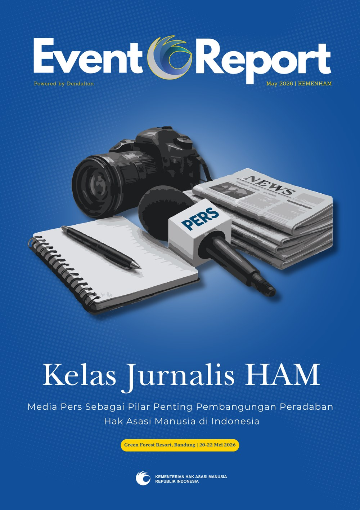

Ministry of Human Rights of the Republic of Indonesia
Media & Policy Communications
Policy & Media Analyst (Project-Based)
Led and supported strategic communication initiatives for two major national-level human rights programs — managing event operations, media relations, data analysis, and editorial design. Coordinated directly with local and national media outlets, and conducted comprehensive post-event analysis by scraping and evaluating publication data. Independently designed and produced a print-ready analytical magazine as the final deliverable.
- Kick Off & Launching: Program Media Pers dan Pembangunan Peradaban Hak Asasi Manusia
- Kelas Jurnalis HAM: Media Pers Sebagai Pilar Penting Pembangunan Peradaban Hak Asasi Manusia di Indonesia